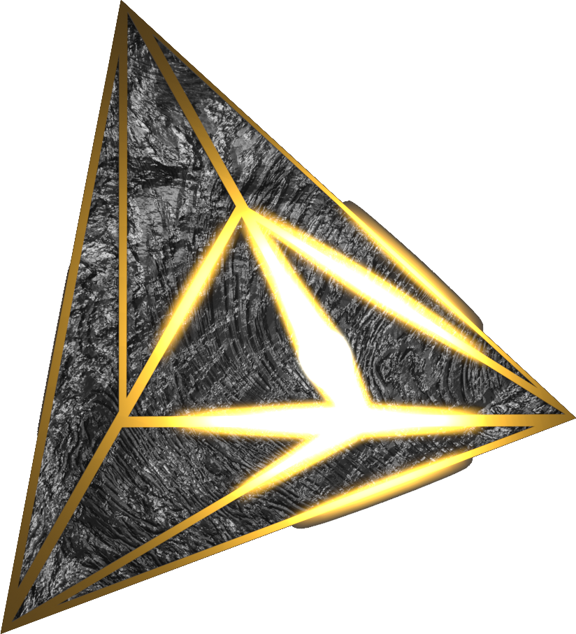

I've been the "VFX Moth" on a friend's FoundryVTT campaign for a few months now. When she needs some form of audiovisual or technical effect to bring her vision to life, I've helped make sure it is possible to execute as she envisioned. This has included creating Sequencer macros, finding new add-ons for her to use, and creating custom-programmed Modules for her.
The most complex and difficult element of this was the Avarice Act 1 Recap. She recorded a series of voice lines that she wanted edited, but I took it upon myself to make an entire lightly-animated video (using Blender). This came out to final runtime of 17 minutes, leveraging many different Blender features to realize it.
